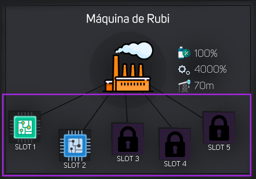
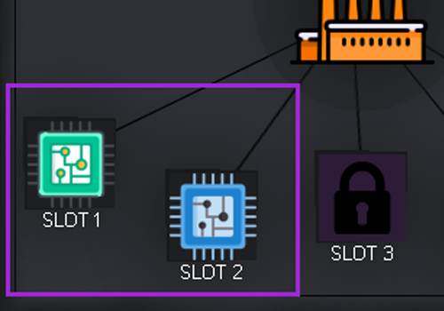
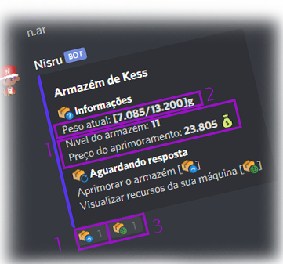

Máquina
Utilizando o comando
Na verdade, todas as pessoas que começam no bot ja possui uma máquina, a Máquina Inicial ( Lista), então todas as pessoas conseguem usar o comando de máquina.
(Mas e como consigo outra máquina?) Para conseguir as próximas máquinas, você deve comprar na loja, para saber detalhadamente visualize a seção Loja da aba Economia
Dica: Volte para a página inicial, clique em Economia e procure pela categoria Loja para encontrar a informação.
Lista
Utilizando o comando
Profundidade
Você pode visualizar a profundidade da sua máquina usando
Basicamente a Profundidade influencia diretamente na quantidade de minérios gerados na Mineração, então quanto maior for a profundidade, mais minérios são gerados.
Cada máquina possui uma profundidade padrão, e quanto melhor for a sua máquina, maior a profundiade.
Você pode aumentar a profundidade da sua máquina "artificialmente" colocando Placas
Tier
Cada máquina possui seu próprio Tier, que seria algo como o nível da máquina, e é o tier que define quais minérios você vai conseguir com sua máquina, porém cada máquina possui seu tier específico e maior, aumentando gradualmente na lista de máquinas.
Para verificar o Tier da sua máquina você pode utilizar
Durabilidade
A durabilidade é contabilizada por unidades, e cada máquina possui sua durabilidade que foi definida por padrão e o gasto da mesma na Mineração. O gasto é realizado a cada update de mineração, ou seja, a cada 20 segundos na mensagem de mineração.
Para saber o gasto de unidades de cada máquina por mineração, basta realizar o cálculo de base que fizemos para este sistema:
Cálculo do gasto:
Caso queira testar de forma automática, clique em Calcular.
Energia
A cada certo tempo (60 segundos para membro comum), a energia sobe um ponto na bateria da máquina, carregando-as e possibilitando o funcionamento delas para geração de recursos.
Você pode utilizar o comando
Placas

Executando o comando
Primeiramente, você pode visualizar o número de placas máxima e placas equipadas, que na imagem está [2/2], ou seja, o primeiro número representa o número de placas equipadas e o segundo representa o máximo
Logo no final da imagem você pode visualizar uma dica, ela fala que a cada 6 níveis você adquire 1 slot, ou seja, para ter 2 placas, você precisa estar nível 12.
[prefixo]equipar
Após ter seu primeiro SLOT de placa liberado (a partir do nível 6), você já tem o direito de equipar uma placa, mas...Qual placa? você precisa comprar uma placa antes para equipá-la, e você pode encontrar elas usando

Com a placa na mochila, você pode conseguir visualizar a quantidade, o ID da placa e um comando para ajuda.
Agora basta executar
[prefixo]desequipar
Após já haver placas equipadas na sua máquina, você pode desequipá-las utilizando o comando.

Com a placa na equipada, usando o comando
Após desequipar uma placa, um SLOT da sua máquina é desocupado e a placa irá direto para a sua mochila (
Armazém

- Sistema por reação para dar upgrade no armazém, a cada nível o armazém sobe 1.2kg de espaço para ter a capacidade de armazenar mais minérios.
- Mostra o peso atual e máximo do seu armazém
- Reação para visualizar os seus recursos e valor total dos mesmos.